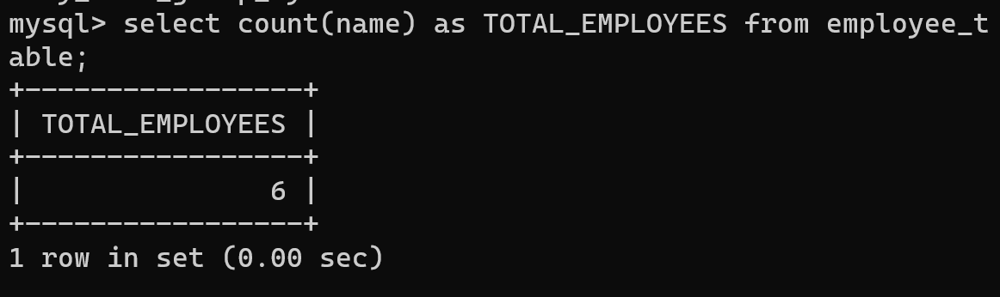
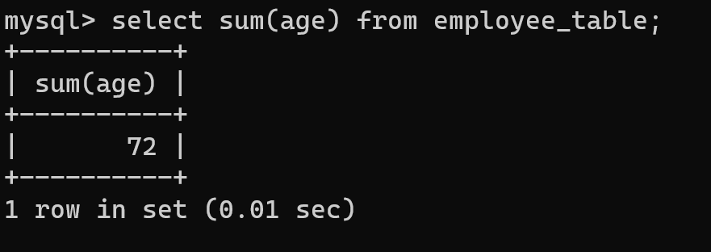
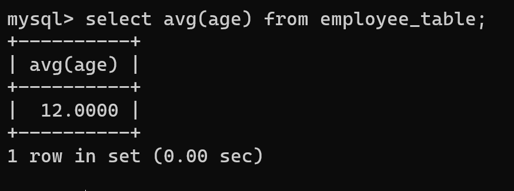
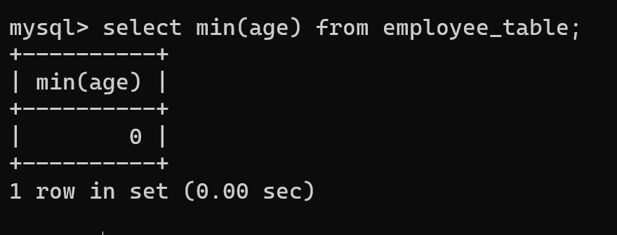
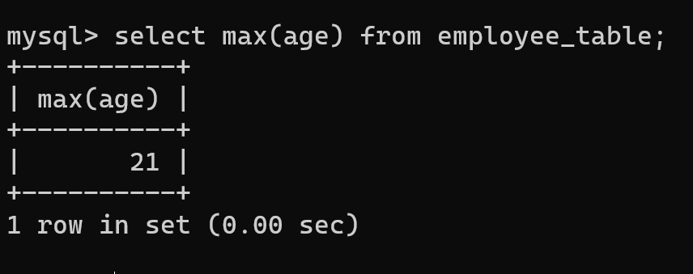

An aggregate function in SQL performs a calculation on multiple values and returns a single value. SQL provides many aggregate functions that include avg, count, sum, min, max, etc. An aggregate function ignores NULL values when it performs the calculation, except for the count function. An aggregate function in SQL performs a calculation on multiple values and returns a single value. SQL provides many aggregate functions that include avg, count, sum, min, max, etc. An aggregate function ignores NULL values when it performs the calculation, except for the count function.
Various types of SQL aggregate functions are:
1.COUNT() Function
The COUNT() function returns the number of rows in a database table.
Syntax:
COUNT(*)
or
COUNT( [ALL|DISTINCT] expression )

2.SUM() Function
The SUM() function returns the total sum of a numeric column.
Syntax:
SUM()
or
SUM( [ALL|DISTINCT] expression )

3.AVG() Function
The AVG() function calculates the average of a set of values.
Syntax:
AVG()
or
AVG( [ALL|DISTINCT] expression )

4.MIN() Function
The MIN() aggregate function returns the lowest value (minimum) in a set of non-NULL values.
Syntax:
MIN()
or
MIN( [ALL|DISTINCT] expression )

5.MAX() Function
The MAX() aggregate function returns the highest value (maximum) in a set of non-NULL values.
Syntax:
AVG()
or
AVG( [ALL|DISTINCT] expression )
